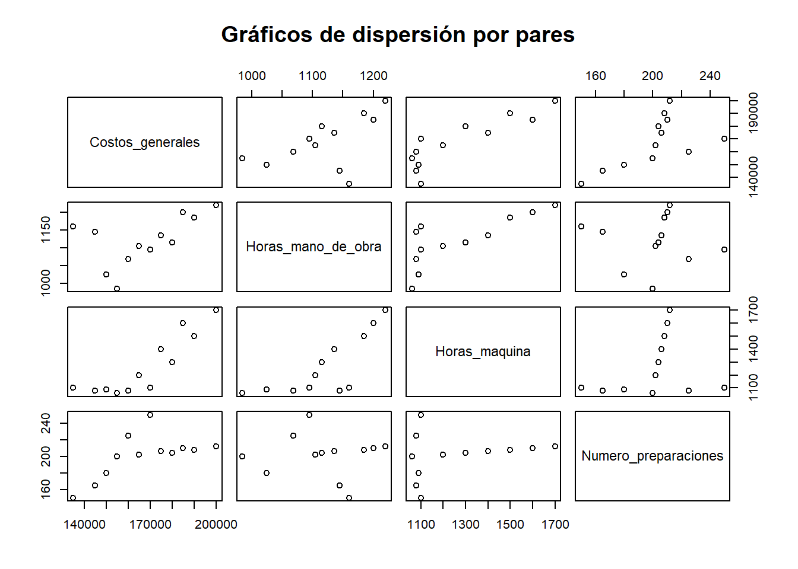
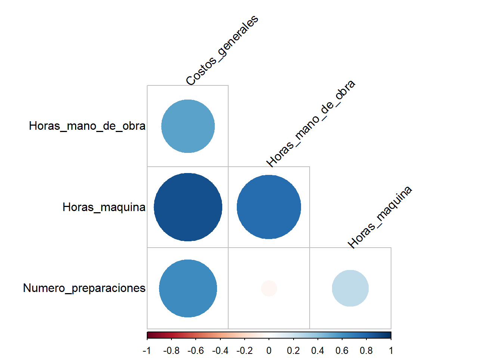
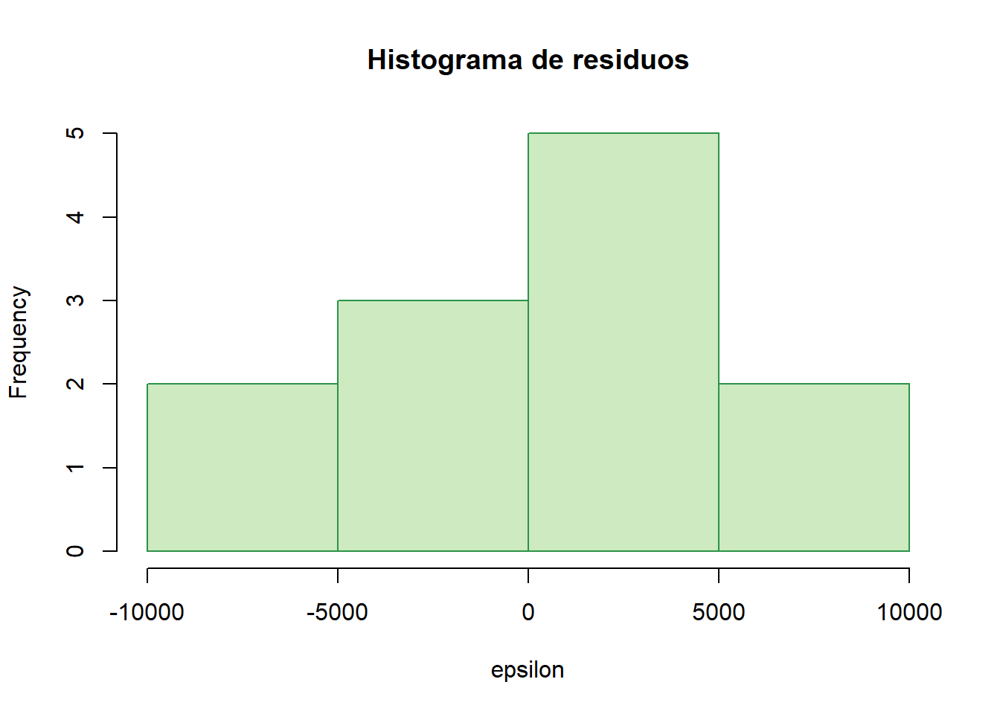
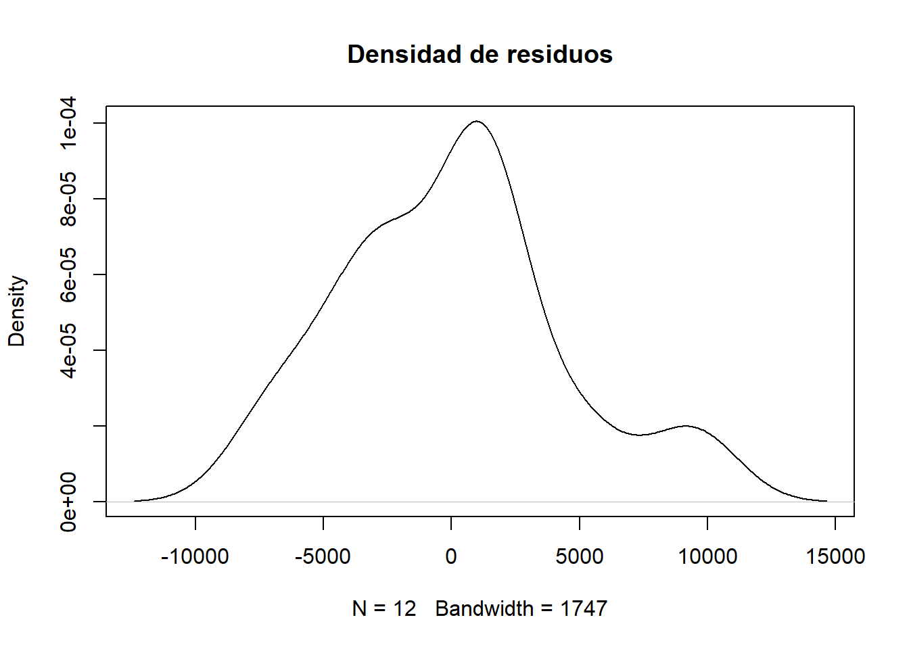
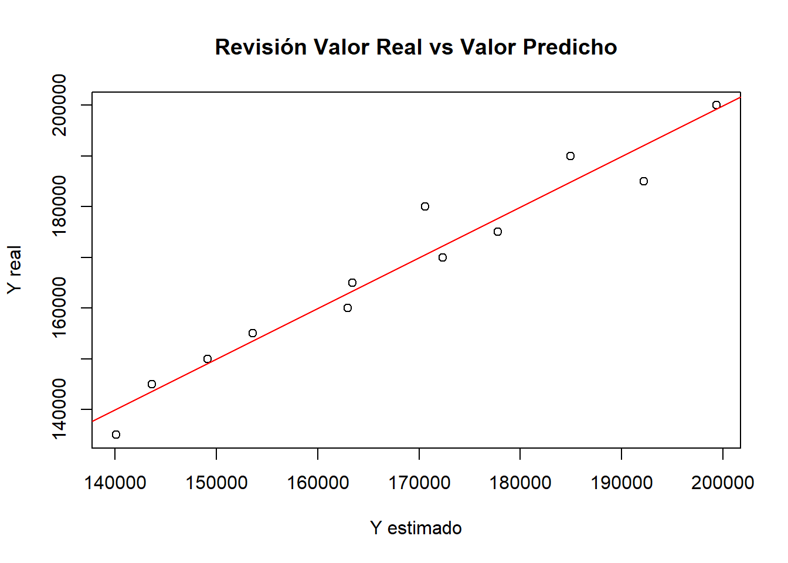
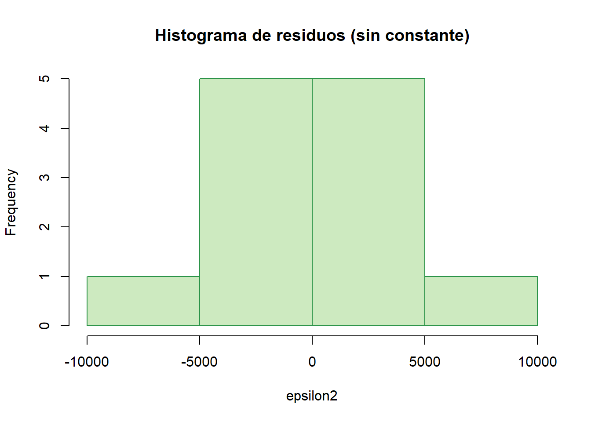
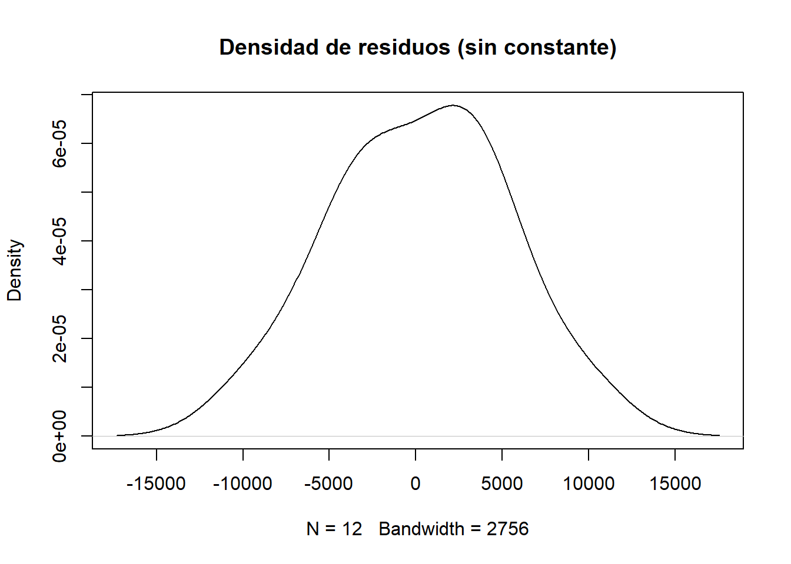
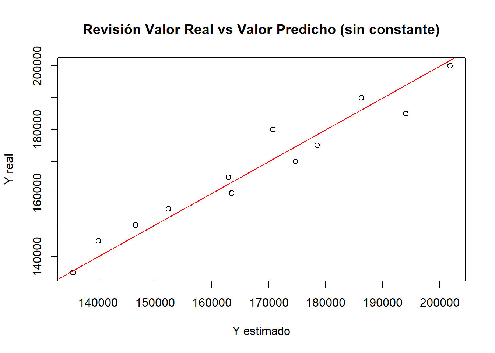

# Ruta absoluta de datos (según tu equipo)
data_path <- "C:/Users/manue/Desktop/lab-econometria/labs/data_epg"
# Verificación de archivos necesarios
if (!file.exists(file.path(data_path, "costos.xlsx"))) {
stop("⚠️ No se encontró 'costos.xlsx' en data_path")
}
# Librerías necesarias
# install.packages(c("tidyverse","openxlsx","corrplot","lmtest"))
library(tidyverse)
library(openxlsx)
library(corrplot)
library(lmtest)Laboratorio 3_epg: Regresión Múltiple
Econometría para la Gestión — FEN-UAH
Material de apoyo elaborado a partir del texto de Fernando A. Crespo R. (2021) para el curso Econometría para la Gestión — FEN-UAH.
1 Regresión Múltiple
Lo primero en un modelo de regresión múltiple es estudiar la relación entre las variables.
Para ello se utiliza la matriz de correlación, donde se despliegan los coeficientes de correlación para cada par de variables.
Multicolinealidad: ocurre cuando dos o más variables presentan una alta correlación entre ellas.
Esto implica que existe una relación directa entre las variables, haciendo difícil determinar cuánto aporta cada una a la explicación de la variable dependiente.
Dos variables con alta correlación no proporcionan información adicional.
Regla general para elegir variables:
- No debe haber correlación alta entre variables predictoras o explicativas (\(x\)).
- Se debe preferir incluir variables independientes entre sí.
2 Marco Teórico: Modelo Clásico de Regresión Múltiple Lineal
El modelo lineal múltiple se puede escribir de forma matricial como:
\[ y = 1_n \beta_0 + x_1 \beta_1 + x_2 \beta_2 + \dots + x_k \beta_k + \varepsilon \tag{3.1} \]
o en forma compacta:
\[ Y = X\beta + \varepsilon \tag{3.2} \]
donde:
- \(Y\) es el vector de observaciones dependientes (\(n \times 1\)).
- \(X\) es la matriz de observaciones de las variables explicativas (\(n \times (k+1)\)).
- \(\beta\) es el vector de parámetros desconocidos (\(\beta_0, \beta_1, \dots, \beta_k\)).
- \(\varepsilon\) es el vector de errores aleatorios.
3 Supuestos del Modelo Clásico
3.1 Supuesto 1
\[ Y = X\beta + \varepsilon \tag{3.3} \]
3.2 Supuesto 2
\(X \in \mathbb{R}^{n \times (k+1)}\) tiene rango completo (condición de identificación).
3.3 Supuesto 3
El error tiene esperanza condicional nula:
\[ E[\varepsilon | X] = \begin{bmatrix} E[\varepsilon_1|X] \\ E[\varepsilon_2|X] \\ \vdots \\ E[\varepsilon_n|X] \end{bmatrix} = 0 \tag{3.4} \]
Además:
\[ \text{Var}[\varepsilon_j | X] = \sigma^2, \quad j = 1, \dots, n \tag{3.5} \]
\[ \text{Cov}[\varepsilon_i, \varepsilon_j | X] = 0, \quad i \neq j \tag{3.6} \]
Esto implica homocedasticidad (varianza constante) y no autocorrelación entre los errores.
3.4 Supuesto 4
\[ E[\varepsilon \varepsilon'] = \sigma^2 I_n \tag{3.7} \]
3.5 Supuesto 5
\(X\) es no estocástica, es decir, se asume conocida o fija en el muestreo.
3.6 Supuesto 6
Los errores son normales:
\[ \varepsilon | X \sim N(0, \sigma^2 I_n) \tag{3.8} \]
4 Estimadores de la Regresión
Los estimadores se pueden obtener por dos vías:
- Máxima verosimilitud, dada la normalidad de los errores.
- Mínimos cuadrados ordinarios (OLS).
Minimizamos la suma de cuadrados de los errores:
\[ S(\beta) = (Y - X\beta)'(Y - X\beta) \tag{3.9} \]
Desarrollando:
\[ S(\beta) = Y'Y - 2Y'X\beta + \beta'(X'X)\beta \tag{3.10} \]
Derivando respecto a \(\beta\) e igualando a cero:
\[ S'(\beta) = -2X'Y + 2(X'X)\beta = 0 \tag{3.11} \]
De donde obtenemos el estimador:
\[ \hat{\beta} = (X'X)^{-1}X'Y \tag{3.12} \]
El vector estimado de valores ajustados es:
\[ \hat{Y} = X\hat{\beta} = X(X'X)^{-1}X'Y \tag{3.13} \]
Y los residuos estimados:
\[ \hat{\varepsilon} = Y - \hat{Y} = (I - X(X'X)^{-1}X')Y \tag{3.14} \]
Propiedades útiles:
\[ X'\hat{\varepsilon} = 0, \qquad \hat{Y}'\hat{\varepsilon} = 0 \tag{3.15} \]
La variación cuadrática de los residuos es:
\[ \hat{\varepsilon}'\hat{\varepsilon} = Y'(I - X(X'X)^{-1}X')Y \tag{3.16} \]
5 Coeficiente de Determinación (\(R^2\))
A partir de (3.16):
\[ Y'Y = (\hat{Y} + \hat{\varepsilon})'(\hat{Y} + \hat{\varepsilon}) = \hat{Y}'\hat{Y} + \hat{\varepsilon}'\hat{\varepsilon} \tag{3.17} \]
En términos de varianzas:
\[ \sum_{j=1}^{n}(Y_j - \bar{Y})^2 = \sum_{j=1}^{n}(\hat{Y}_j - \bar{Y})^2 + \sum_{j=1}^{n}\hat{\varepsilon}_j^2 \tag{3.18} \]
Por tanto:
\[ R^2 = 1 - \frac{\sum_{j=1}^{n}\hat{\varepsilon}_j^2}{\sum_{j=1}^{n}(Y_j - \bar{Y})^2} = \frac{\sum_{j=1}^{n}(\hat{Y}_j - \bar{Y})^2}{\sum_{j=1}^{n}(Y_j - \bar{Y})^2} \tag{3.19} \]
5.1 Contraste F global
Hipótesis:
\[ H_0: \beta_1 = \beta_2 = \dots = \beta_k = 0 \tag{3.20} \]
El estadístico es:
\[ F = \frac{R^2 / k}{(1 - R^2) / (n - k - 1)} \sim F_{k,\, n - k - 1} \tag{3.21} \]
Rechazamos \(H_0\) si \(P(F \ge f) \le \alpha\).
5.2 Propiedades de los estimadores
\[ E[\hat{\beta}] = \beta, \qquad \text{Cov}(\hat{\beta}) = \sigma^2 (X'X)^{-1} \tag{3.22} \]
Para los residuos:
\[ E[\hat{\varepsilon}] = 0, \qquad \text{Cov}(\hat{\varepsilon}) = \sigma^2 [I - X(X'X)^{-1}X'] \tag{3.23} \]
Estimador insesgado de \(\sigma^2\):
\[ s^2 = \frac{\hat{\varepsilon}'\hat{\varepsilon}}{n - k - 1} \tag{3.24} \]
5.3 Contraste individual para \(\beta_j\)
\[ H_0: \beta_j = \beta_j^*, \qquad H_1: \beta_j \neq \beta_j^* \tag{3.25} \]
El estadístico:
\[ t_j = \frac{\hat{\beta}_j - \beta_j^*}{s \sqrt{(X'X)^{-1}_{jj}}} \sim t_{n - k - 1} \tag{3.26} \]
Rechazamos \(H_0\) si \(|t_j| > t_{\alpha/2,\, n - k - 1}\).
El p-valor se obtiene como:
\[ p = P(|t_j| > |t_j^{obs}|) \tag{3.27} \]
5.4 Intervalos de confianza
Para cada \(\beta_j\):
\[ \hat{\beta}_j \pm t_{\alpha/2,\, n - k - 1} \, s \sqrt{(X'X)^{-1}_{jj}} \tag{3.28} \]
Para la varianza del error:
\[ \left[ \frac{(n - k - 1)s^2}{\chi^2_{n - k - 1,\, 1 - \alpha/2}}, \quad \frac{(n - k - 1)s^2}{\chi^2_{n - k - 1,\, \alpha/2}} \right] \tag{3.29} \]
5.5 Predicción
Para un nuevo vector \(x_0\) (incluyendo el valor 1 si el modelo tiene constante):
\[ \hat{y}_0 = x_0' \hat{\beta} \tag{3.30} \]
Varianza del estimador:
\[ h_0 = x_0'(X'X)^{-1}x_0 \tag{3.31} \]
Intervalo de confianza para la predicción:
\[ \hat{y}_0 \pm s \sqrt{1 + h_0} \; t_{\alpha/2,\, n - k - 1} \tag{3.32} \]
5.6 Diagnósticos de supuestos
Durbin–Watson (autocorrelación de errores):
\[ D = \frac{\sum_{i=2}^{n} (e_i - e_{i-1})^2}{\sum_{i=1}^{n} e_i^2} \tag{3.33} \]
- Si \(D \approx 2\): no hay autocorrelación.
- Si \(D \approx 0\): autocorrelación positiva.
- Si \(D \approx 4\): autocorrelación negativa.
Test de Breusch–Pagan (homocedasticidad):
\[ H_0: \text{Var}(\varepsilon_i) = \sigma^2 \quad \forall i \tag{3.34} \]
Si el valor-p es mayor que 0.05, se asume que los errores tienen varianza constante.
✅ Resumen:
El modelo clásico de regresión múltiple lineal supone linealidad, independencia, homocedasticidad y normalidad.
Los estimadores OLS son BLUE (Best Linear Unbiased Estimators) bajo estos supuestos.
6 Aplicación en R (sobre los contenidos anteriores)
# Cargar datos
datos <- read.xlsx(file.path(data_path, "costos.xlsx"), sheet = "Hoja1", colNames = TRUE)
# Matriz de correlación y gráficos exploratorios
r <- cor(datos, use = "pairwise.complete.obs")
pairs(datos, main = "Gráficos de dispersión por pares")
corrplot(r, method = "circle", type = "lower", diag = FALSE,
tl.col = "black", tl.cex = 1, tl.offset = 0.1, tl.srt = 45)
# Modelo de regresión múltiple (con intercepto)
modelo <- lm(Costos_generales ~ Horas_maquina + Numero_preparaciones, data = datos)
# Estadísticos del modelo
summary(modelo)
Call:
lm(formula = Costos_generales ~ Horas_maquina + Numero_preparaciones,
data = datos)
Residuals:
Min 1Q Median 3Q Max
-7157 -2827 768 1449 9407
Coefficients:
Estimate Std. Error t value Pr(>|t|)
(Intercept) 19796.44 12787.83 1.548 0.156013
Horas_maquina 65.44 6.74 9.709 4.57e-06 ***
Numero_preparaciones 322.21 58.66 5.493 0.000384 ***
---
Signif. codes: 0 '***' 0.001 '**' 0.01 '*' 0.05 '.' 0.1 ' ' 1
Residual standard error: 4951 on 9 degrees of freedom
Multiple R-squared: 0.9472, Adjusted R-squared: 0.9354
F-statistic: 80.66 on 2 and 9 DF, p-value: 1.792e-06# Guardando los residuos
epsilon <- modelo$residuals# Análisis de residuos
hist(epsilon, main = "Histograma de residuos", col = "#cdeac0", border = "#2b9348")
plot(density(epsilon), main = "Densidad de residuos")
shapiro.test(epsilon) # Normalidad de residuos
Shapiro-Wilk normality test
data: epsilon
W = 0.95577, p-value = 0.7222# Autocorrelación de residuos (Durbin-Watson) y heterocedasticidad (Breusch-Pagan)
dwtest(modelo, alternative = "two.sided", iterations = 1000)
Durbin-Watson test
data: modelo
DW = 2.0815, p-value = 0.7416
alternative hypothesis: true autocorrelation is not 0bptest(modelo)
studentized Breusch-Pagan test
data: modelo
BP = 1.0153, df = 2, p-value = 0.6019# Cálculo manual del estadístico F (usando un R2 dado)
R2 <- 0.9472
F <- (R2/2) / ((1 - R2) / (12 - 3))
F[1] 80.72727# Valor crítico F (α = 0.05, gl1 = 2, gl2 = 9)
qf(0.05, 2, 9, lower.tail = FALSE)[1] 4.256495# Desviación estándar del error
s <- sqrt(sum(epsilon^2) / (12 - 2 - 1))
s[1] 4951.106# Intervalos de confianza para coeficientes
confint(modelo) 2.5 % 97.5 %
(Intercept) -9131.64046 48724.5095
Horas_maquina 50.18894 80.6827
Numero_preparaciones 189.50994 454.9046out <- summary(modelo)
out$coefficients[, 1] # Betas (Intercept) Horas_maquina Numero_preparaciones
19796.43452 65.43582 322.20728 out$coefficients[, 2] # Error estándar (Intercept) Horas_maquina Numero_preparaciones
12787.827235 6.739972 58.659648 # Estimación manual de IC para un coeficiente (ejemplo)
tcrit <- -1 * qt(0.025, 12 - 2 - 1, lower.tail = FALSE)
BHM <- 65.44
sbhm <- 6.74
limitsupBHM <- BHM + tcrit * sbhm
limitinfBHM <- BHM - tcrit * sbhm
c(liminfBHM = limitinfBHM, limitsupBHM = limitsupBHM) liminfBHM limitsupBHM
80.68694 50.19306 # IC para la varianza del error (chi-cuadrado)
gamma1 <- qchisq(0.025, 12 - 2 - 1)
gamma2 <- qchisq(0.975, 12 - 2 - 1)
s2_LI <- (12 - 2 - 1) * s^2 / gamma2
s2_LS <- (12 - 2 - 1) * s^2 / gamma1
c(s2_LI = s2_LI, s2_LS = s2_LS) s2_LI s2_LS
11597739 81699732 # Predicción para un nuevo valor
nuevo <- data.frame(Horas_maquina = c(2000), Numero_preparaciones = c(220))
valor_predicho <- predict(object = modelo, newdata = nuevo)
valor_predicho2 <- predict(object = modelo, newdata = nuevo, interval = "confidence")
valor_predicho 1
221553.7 valor_predicho2 fit lwr upr
1 221553.7 210265.6 232841.8# Predicción manual con matrices
X <- cbind(1, datos$Horas_maquina, datos$Numero_preparaciones)
M <- solve(t(X) %*% X)
beta <- M %*% t(X) %*% datos$Costos_generales
x0 <- c(1, 2000, 220)
h0 <- t(x0) %*% M %*% x0
y0 <- t(beta) %*% x0
y_limsup <- y0 + s * sqrt(1 + h0) * qt(0.975, 12 - 2 - 1, lower.tail = FALSE)
y_liminf <- y0 - s * sqrt(1 + h0) * qt(0.975, 12 - 2 - 1, lower.tail = FALSE)
c(y_liminf = y_liminf, y_limsup = y_limsup)y_liminf y_limsup
237455.4 205651.9 # Gráfico: valor Y estimado vs Y real
plot(modelo$fitted.values, datos$Costos_generales,
main = "Revisión Valor Real vs Valor Predicho",
xlab = "Y estimado", ylab = "Y real")
abline(a = 0, b = 1, col = "red")
# Modelo sin constante
modelo2 <- lm(Costos_generales ~ Horas_maquina + Numero_preparaciones - 1, data = datos)
summary(modelo2)
Call:
lm(formula = Costos_generales ~ Horas_maquina + Numero_preparaciones -
1, data = datos)
Residuals:
Min 1Q Median 3Q Max
-9042.2 -3486.9 739.7 3467.0 9300.3
Coefficients:
Estimate Std. Error t value Pr(>|t|)
Horas_maquina 69.994 6.472 10.814 7.72e-07 ***
Numero_preparaciones 390.723 41.098 9.507 2.52e-06 ***
---
Signif. codes: 0 '***' 0.001 '**' 0.01 '*' 0.05 '.' 0.1 ' ' 1
Residual standard error: 5286 on 10 degrees of freedom
Multiple R-squared: 0.9992, Adjusted R-squared: 0.999
F-statistic: 6095 on 2 and 10 DF, p-value: 3.699e-16epsilon2 <- modelo2$residuals
hist(epsilon2, main = "Histograma de residuos (sin constante)", col = "#cdeac0", border = "#2b9348")
plot(density(epsilon2), main = "Densidad de residuos (sin constante)")
shapiro.test(epsilon2)
Shapiro-Wilk normality test
data: epsilon2
W = 0.97973, p-value = 0.9825dwtest(modelo2, alternative = "two.sided", iterations = 1000)
Durbin-Watson test
data: modelo2
DW = 2.1284, p-value = 0.9776
alternative hypothesis: true autocorrelation is not 0bptest(modelo2)
studentized Breusch-Pagan test
data: modelo2
BP = 0.33027, df = 1, p-value = 0.5655plot(modelo2$fitted.values, datos$Costos_generales,
main = "Revisión Valor Real vs Valor Predicho (sin constante)",
xlab = "Y estimado", ylab = "Y real")
abline(a = 0, b = 1, col = "red")
7 Bibliografía
Crespo, F. A. (2021). Regresión Múltiple. Universidad Alberto Hurtado.